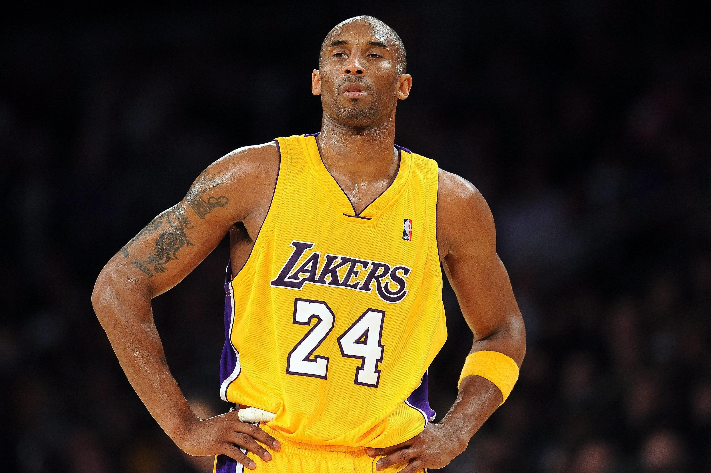
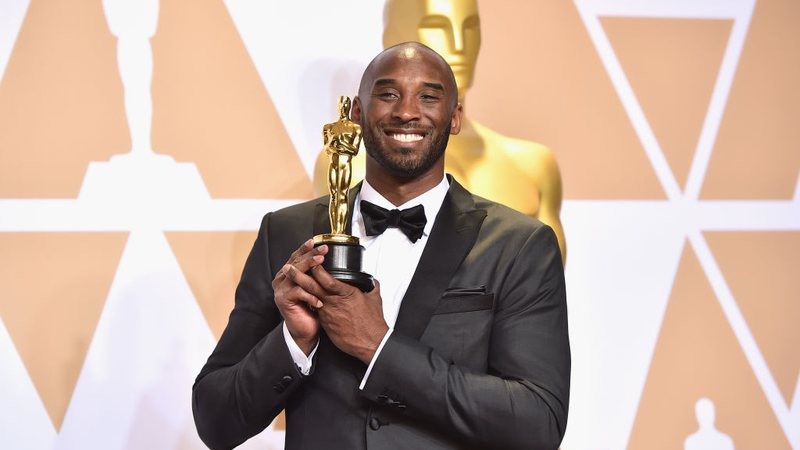

Kobe Bryant
Um dos maiores jogadores de basquete de todos os tempos, quarto maior cestinha da história da NBA, maior pontuador do Los Angeles Lakers, pentacampeão da principal liga do mundo, bicampeão olímpico… Há várias formas de falar sobre Kobe Bryant. Até Oscar, ganhou.
Quem foi Kobe Bryant?
Kobe Bryant foi um dos maiores jogadores da história do basquete. Ele nasceu em 23 de agosto de 1978, na Filadélfia. Na NBA, defendeu o Los Angeles Lakers entre 1996 e 2016. Nesse período, foi pentacampeão da liga. O armador foi eleito o MVP da NBA na temporada 2008. Em 2009 e 2010, ele recebeu o prêmio de melhor jogador das finais. Por 18 vezes, Kobe Bryant esteve no All-Star Game da NBA. Ele foi o MVP do Jogo das Estrelas em 2002, 2007, 2009 e 2011. Maior cestinha da história do Los Angeles Lakers, com 33.643 pontos, Kobe Bryant é também o quarto maior pontuador da NBA em todos os tempos — na véspera de sua morte, ele foi ultrapassado por LeBron James, que atualmente defende a tradicional franquia da Califórnia. Kobe foi o maior cestinha de duas temporadas da NBA: 2006 e 2007. Não era apenas no ataque que Kobe Bryant se destacava. Ele foi eleito para o time ideal de defesa da NBA em nove temporadas. Pela seleção dos Estados Unidos, Kobe foi medalhista de ouro nos Jogos Olímpicos de Pequim, em 2008, e de Londres, em 2012. Foi também campeão mundial, em 2007.
Como Kobe Bryant chegou à NBA?
Kobe Bryant chegou à NBA em 1996. Ele foi selecionado na 13ª escolha do draft (é um evento anual no qual os 30 times podem recrutar jogadores que são elegíveis para ingressar na liga, sejam eles universitários ou estrangeiros.) pelo Charlotte Hornets — o armador Allen Iverson foi o primeiro a ser recrutado, pelo Philadelphia 76ers. Na sequência, os Hornets trocaram Kobe com o Los Angeles Lakers pelo pivô Vlade Divac. Ao contrário da trajetória mais comum dos jogadores de esportes americanos, Kobe Bryant não passou pela universidade antes da NBA. Ele foi diretamente para o draft depois de se destacar pela Lower Merion High School. Kobe foi o principal destaque da campanha do título estadual dos Aces, na Pensilvânia, depois de 53 anos sem conquistas. Ele encerrou sua trajetória no high school com 2.883 pontos, superando recordes de Wilt Chamberlain e Lionel Simmons. O desempenho excepcional rendeu a ele o prêmio Naismith High School Player of the Year e chamou a atenção das principais universidades dos Estados Unidos. Entretanto, aos 17 anos, Kobe Bryant decidiu não jogar no basquete universitário. Ele foi o sexto jogador a ir diretamente do high school para o draft da NBA. Antes do draft, o Los Angeles Lakers chegou a um acordo com o Charlotte Hornets, indicou que a franquia selecionasse Kobe Bryant e fez a troca por Vlade Divac. Kobe Bryant assinou um contrato de calouro com a franquia da Califórnia de 3 anos por US$ 3,5 milhões, naquele que foi o início da história de um dos maiores ídolos da história dos Lakers.
Recordes e prêmios de Kobe Bryant
- Quarto maior cestinha da história da NBA, com 33.643 pontos
- Maior pontuador da história do Los Angeles Lakers
- Pentacampeão da NBA
- MVP da NBA em 2008
- MVP das Finais da NBA em 2009 e 2010
- Cestinha da NBA nas temporadas 2006 e 2007
- Eleito por 11 vezes para o time ideal da NBA
- Eleito por 9 vezes para o time ideal de defesa da NBA
- Eleito por 18 vezes para o All-Star Game da NBA
- Campeão do torneio de enterradas no All-Star Game da NBA de 1997
- Eleito para o time ideal de calouros da NBA em 1997
- 4 vezes MVP do All-Star Game da NBA
- Números 8 e 24 aposentados pelos Los Angeles Lakers
- Bicampeão das Olimpíadas, em Pequim 2008 e Londres 2012
- Campeão mundial pelos Estados Unidos em 2007
Estatísticas de Kobe Bryant na NBA
- Pontos por jogo: 25,6
- Assistências por jogo: 4,7
- Rebotes por jogo: 5,1
- Roubos por jogo: 1,4
- Percentual de cestas de 3 pontos: 33,1%
- Pontos na NBA: 33.643 (quarta maior marca da história)
Kobe Bryant vencedor do Oscar
O sucesso de Kobe Bryant não se restringe às quadras. Em 2018, o ex-jogador venceu o Oscar pelo curta-metragem Dear Basketball: The Legend of Kobe. Com menos de 4 minutos, Dear Basketball, dirigido por Glen Keane, é baseado na carta de aposentadoria de Kobe Bryant. A narração é seguida por vídeos de exemplo de peças de sua carreira. “5 segundos no relógio, bola na mão. 5, 4, 3, 2, 1 …”. São menos de 4 minutos para você assistir a um vencedor do Oscar, com a narração de Kobe Bryant.
Curiosidades sobre Kobe Bryant
- Kobe Bryant era filho de Joe Bryant, ex-jogador da NBA. Enquanto seu pai jogou na Itália, Kobe conheceu Oscar Schmidt e se tornou fã do brasileiro.
- Kobe tinha 1,98m de altura.
- O armador vestiu as camisas 8 e 24 ao longo de sua carreira na NBA. Ambas foram aposentadas pelo Los Angeles Lakers.
- Kobe Bryant era casado com Vanessa Laine. Eles tiveram 4 filhas, Natalia, Gianna, Bianka e Capri.
Considerada uma atleta de basquete bastante promissora, Gianna, infelizmente, também estava no helicóptero que sofreu um acidente e resultou na morte de Kobe Bryant em 26 de janeiro de 2020. A garota tinha 13 anos. Kobe Bryant não estará mais nas cadeiras do Staples Center para acompanhar os jogos dos Lakers. Mas, certamente, estará nos corações de todos os torcedores da franquia e também dos fãs de basquete.
Texto disponível em Esportelândia
Homenagens
O ídolo da NBA Kobe Bryant ganhou uma homenagem póstuma. Em um post no Instagram, a Academia de Televisão norte-americana, responsável pelo Emmy(2020), anunciou que premiará o atleta pelo trabalho comunitário feito em Los Angeles, nos Estados Unidos.
Texto disponível em Jovem Pan
Mais uma homenagem a Kobe Bryant, a rua Figueroa, em Los Angeles, vai passar a se chamar Kobe Bryant Boulevard. A rua fica próxima ao Staples Center, casa dos Lakers, onde Kobe jogou por quase 20 anos e vestiu as camisas 24 e 8 - ambas aposentadas pela franquia amarela e roxa. Ao anunciar a homenagem, o presidente do Conselho Municipal da cidade ressaltou a importância do jogador.
Texto disponível em Globo Esporte